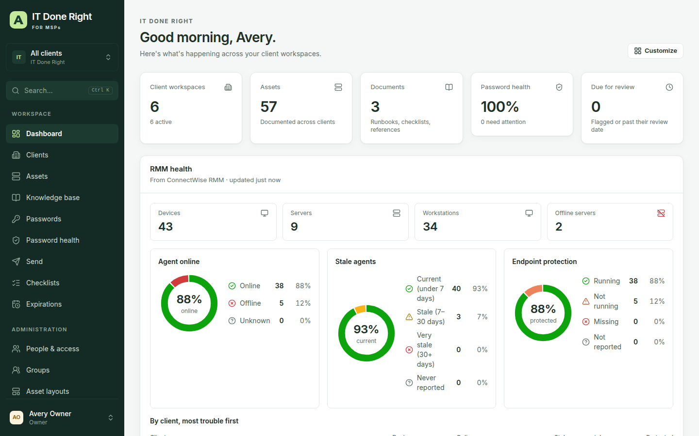
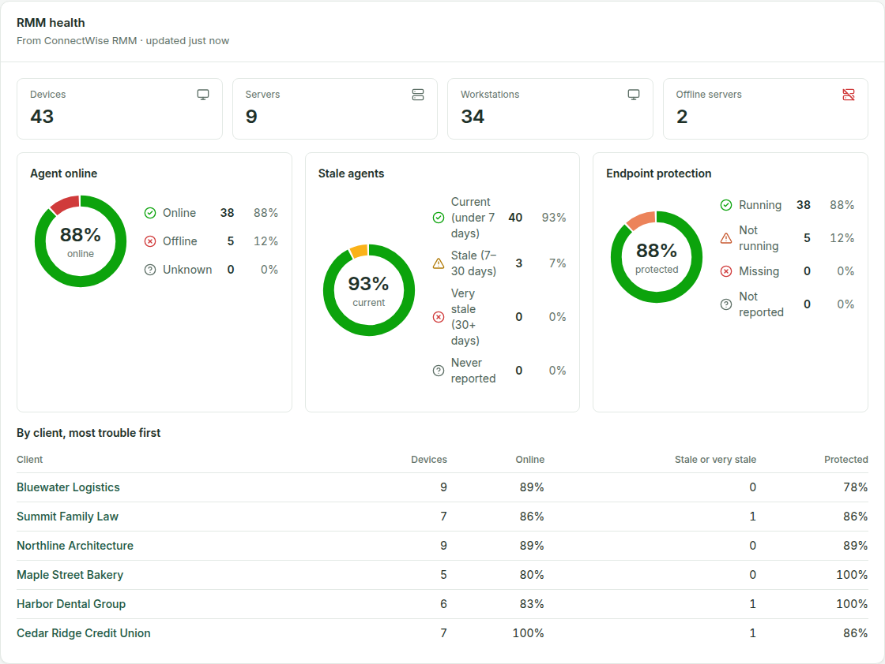
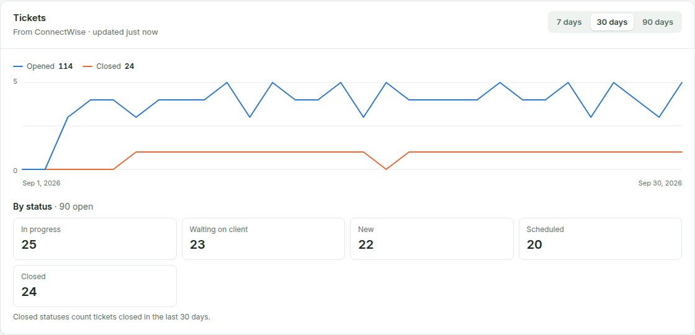
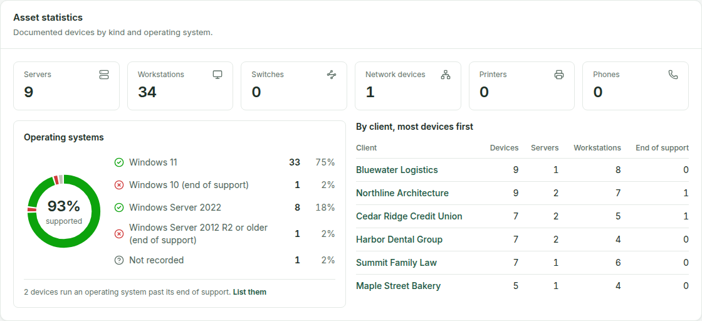
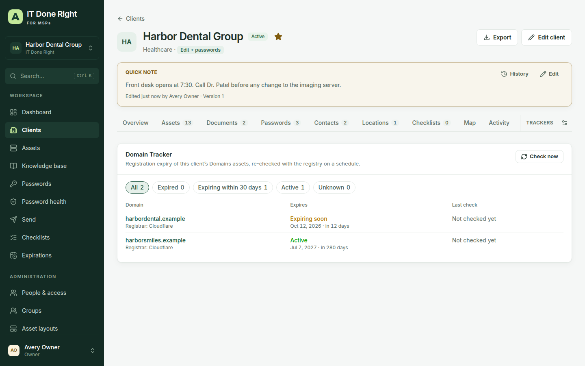
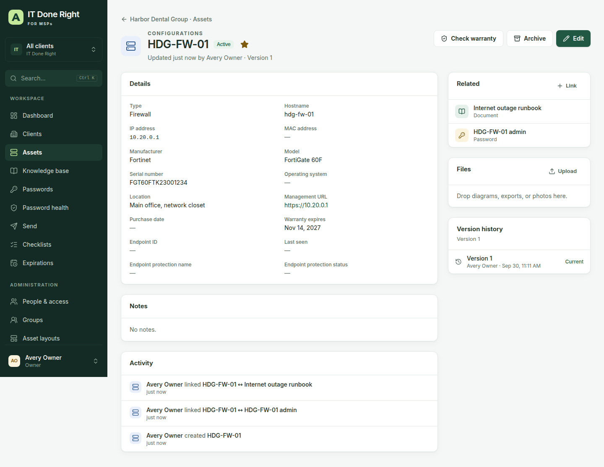
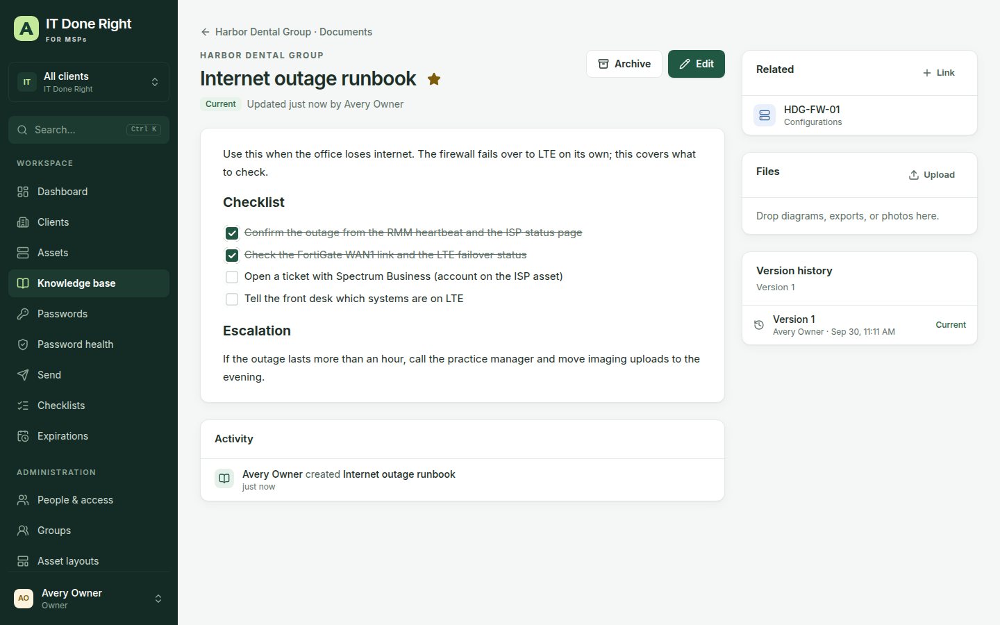
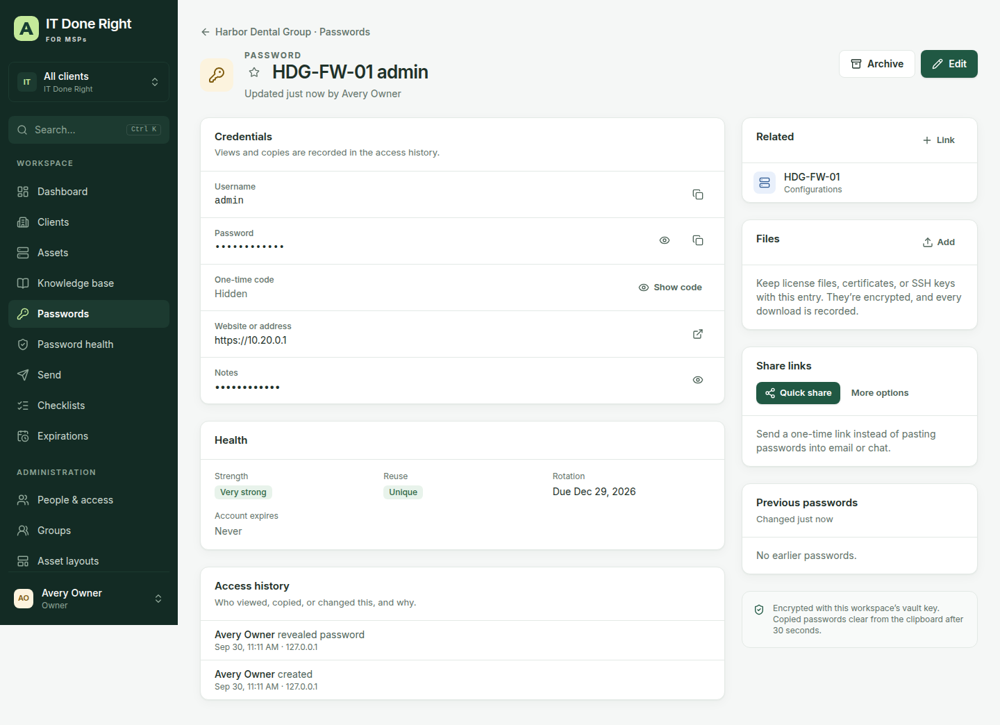
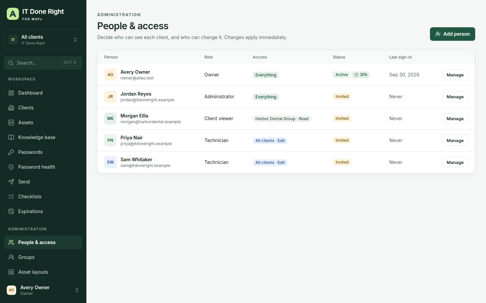
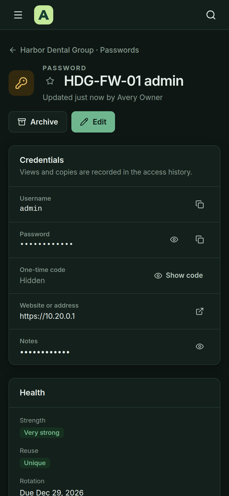

Documentation that stays current
Assets built from layouts, runbooks with checklists and review dates, and version history with line-by-line comparison and restore.
MSP Atlas 1.7.8
Client workspaces, flexible assets, runbooks, and an encrypted credential vault in one self-hosted application — with per-client access for technicians and read-only access for the clients you support.
Assets built from layouts, runbooks with checklists and review dates, and version history with line-by-line comparison and restore.
Every reveal, copy, change, and share is recorded. Restrict entries to named people, and require a reason for each reveal.
Per-client access levels and groups. A client you can't access looks exactly like one that doesn't exist.
Import from Hudu or CSV, sync devices and tickets from the ConnectWise platform, export any client as a zip, and automate with a REST API and scoped API keys.
New in 1.7
The 1.7 releases add ConnectWise platform sync with security and compliance, ticket and expiry dashboards, automated password rotation, and apps for the browser and Windows.
Show, hide, and reorder cards, and star clients, documents, and assets as Favorites. Client pages open with quick notes, primary contact, hours, and maintenance window.
Devices sync from ConnectWise RMM as device assets with manufacturer, last check-in, online status from the heartbeat, and endpoint protection, feeding the RMM health charts.
Tickets from the ConnectWise platform with opened and closed per day, a tile per status, and a ticket table on each client. In North America, tickets link to their page in ConnectWise.
Servers, workstations, switches, network devices, printers, and phones at a glance, with an operating system chart that marks the ones out of support.
Domains are re-checked with their registry and certificates read from each site on a schedule, so expirations and alerts stay accurate. Each client has its own trackers.
Dell, Lenovo, and HP warranty end dates are filled in from the serial number, with no vendor API keys to set up. Dates you typed in are never replaced.
Local administrator and service account passwords change on a schedule through ConnectWise RMM. The vault updates only after the device confirms.
Fill saved logins in Edge and Chrome, or press Ctrl+Shift+Space in the Atlas for Windows tray app (preview). Neither stores passwords, and every fill or copy is recorded.
Patch compliance, backup and DR readiness, vulnerabilities by severity, and open MDR cases from ConnectWise on each client and device. Areas you don't license show as not available.
Installed software with out-of-support, unlicensed, and over-seat flags; who signs in to each device; VM hosts; disk, CPU, and memory use; device groups and policies; and contacts synced from ConnectWise.
Optional “Atlas link” fields on ConnectWise devices and companies, and ticket notes you can read and add from Atlas. A reveal that names a ticket notes it there, without the password.
Set generator rules, require reveal reasons everywhere, name trusted administrators for emergency access, stream logs to a SIEM, and keep secure notes, encrypted files, and Send links.
Product tour
Each client has its own assets, documents, passwords, contacts, locations, and activity. Ctrl+K search finds any of them — including by IP address or serial number — and returns only what you're allowed to see.










How it works
HttpOnly, Secure,
SameSite=Strict cookies, plus a CSRF token on every change.
Browser (React, strict CSP)
|
v
apps/server Fastify checks, sessions, MFA,
per-client authorization
|
+--> vault envelope encryption
+--> backups encrypted .atlasbak files
+--> KeyProvider master key, never
stored in the database
|
v
PostgreSQL 16 + attachments folderFull detail in the security model.
Roadmap
Planned work, not yet released. The ConnectWise features on the list shipped in 1.7.7.
A signed MSIX installer and automatic updates for Atlas for Windows, waiting on a code-signing certificate.
Bring documentation and passwords over from IT Glue and ITBoost, the way the Hudu importer does today.
Before you store client credentials
Version 1.7.8 covers documentation, the vault with secure notes, encrypted files, and Send, vault policies with emergency access and SIEM streaming, accounts and security, sign-in with Microsoft Entra ID, the REST API, Hudu and CSV import, ConnectWise RMM device, contact, and software sync, security and compliance, tickets, and optional write-back from the ConnectWise platform, Microsoft 365 sync, keyless warranty lookup for Dell, Lenovo, and HP, domain and SSL tracking, automated password rotation, a browser extension for Edge and Chrome, a preview Windows app, a customizable dashboard with asset statistics, runnable checklists, relationship maps, password health reports, per-client exports, encrypted backups with verified restore, a system status page, a read-only client portal, and Docker or Windows hosting. Not yet included: a signed Windows app installer, and IT Glue or ITBoost importers.